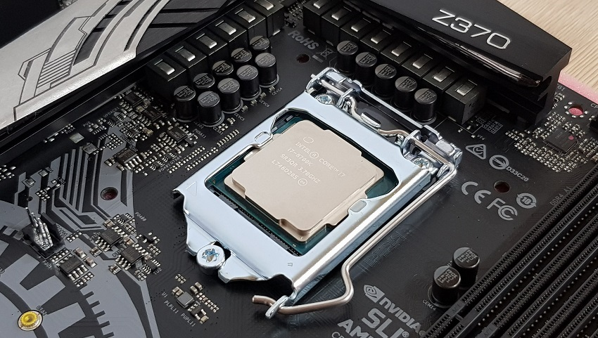

Test výkonu PC
Chceli ste niekedy otestovať výkon svojho počítača alebo notebooku? Na čo je test výkonu počítača dobrý? Aké sú najvhodnejšie programy na meranie výkonu? Ako zrýchliť počítač? Ako správne merať, a čomu sa naopak vyhnúť, vám vysvetlím v tomto podrobnom návode. Ak vás zaujíma problematika porovnávania hardvéru, prípadne sa chcete aj niečo nové naučiť, čítajte ďalej.

Prečo by sme vlastne mali testovať?
Dôvodov, prečo otestovať výkon svojho počítača, je veľa. Z praxe uvediem niekoľko najčastejších účelov a modelových situácií, kedy je žiaduce také meranie vykonať.
- Kupujeme nové zariadenie a zaujíma nás výkonový posun oproti starému.
- S cieľom overiť, či hardvér naplno využíva svoj potenciál.
- Demonštrácia získaného výkonu po pretaktovaní.
- Kontrola stability systému a funkčnosti chladenia.
- Ako dôkaz susedovi, že náš notebook je lepší ako jeho.

Metodika a postup merania
Neexistuje žiadny univerzálny postup, ktorý by sa dal aplikovať na každé meranie – vždy je potrebné prispôsobiť sa konkrétnej situácii a zvoliť ten najvhodnejší. Avšak, aby naše testovanie malo reálny prínos a bolo čo najpresnejšie, je vhodné dodržať tri základné pravidlá.
Rovnaká metodika testovania
V rámci jedného testovania meriame výsledky na všetkých zariadeniach rovnakým softvérom, v rovnakej verzii. Výsledky dvoch rôznych softvérov nemožno porovnávať. Tiež vždy zachovávame identické nastavenia ako rozlíšenie, detaily, vyhladzovanie hrán a podobne. V prípade herných testov je zase dôležitý výber a dodržanie testovacej scény. Ak by sme napríklad chceli porovnať hodnoty FPS dvoch notebookov v hre DOOM (2016), aplikujeme na oboch zariadeniach rovnaké grafické nastavenie a meranie vykonávame v rovnakej misii a na rovnakej obťažnosti. Na čo najpresnejšie meranie sa snažíme pohybovať a vykonávať akcie vždy rovnako.